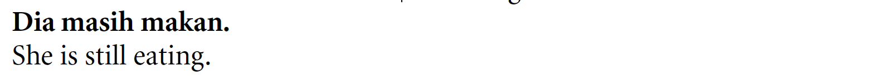
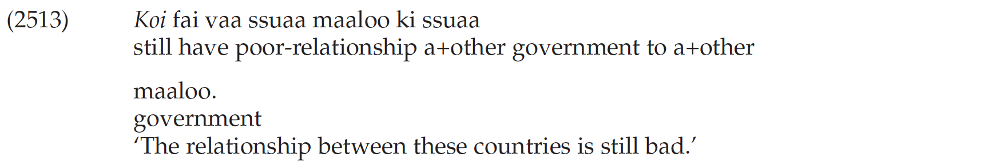
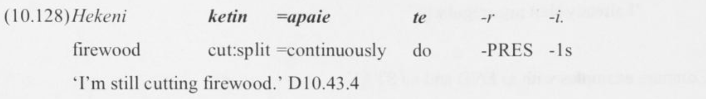

Continutives in Papunesia
1. Languages
All Papunesian languages included in the sample.
1.1. List
1.2. Map
2. Examples
Austronesian (> Malayo-Polynesian > Celebic)
Tukang Besi North (Donohue 1999:174)

The continuative marker: -ho.
Austronesian (> Malayo-Sumbawan)
Indonesian (Sneddon, … Ewing 2010:206)

The continuative marker: masih.
Austronesian (> Malayo-Polynesian > Greater Central Philippine)
Tagalog (Schachter and Otanes 1972:416)

The continuative marker: pa.
Austronesian (> Malayo-Polynesian > Oceanic > New Caledonian)
Nêlêmwa-Nixumwak (Bril 2016:93)

The continuative marker: gaa.
Nêlêmwa-Nixumwak (Bril 2016:95)

The continuative marker: gat.
Austronesian (> Malayo-Polynesian > Oceanic > Central Vanuatu)
Dakaka (Prince 2012:179)

The continuative marker: ngabak.
Austronesian (> Malayo-Polynesian > Polynesian)
Tuvalu (Besnier 2000:488)

The continuative marker: koi.
Nuclear Trans New Guinea (> Madang)
Kesawai (Priestley 2008:382)

The continuative marker: =apaie + te ‘do’ / deictic verb.


3. Parameters
3.1. Morposyntactic status
3.2. Meaning in combination with negation
3.3. TAM restrictions
3.4. Adjacent meanings
3.5. Diachronic sources
References
Barclay, P. 2008. A Grammar of Western Dani. München: Lincom.
Besnier, N. 2000. Tuvaluan: A Polynesian Language of the Central Pacific. London & New York: Routledge.
Bril, I. 2016. ‘Tense, Aspect and Mood in Nêlêmwa (New Caledonia): Encoding Events, Processes and States’. In Guentchéva, Z. (ed), Aspectuality and temporality: Descriptive and theoretical issues. Amsterdam: John Benjamins, 63–106.
Donohue, M. 1999. A Grammar of Tukang Besi. Berlin: Mouton de Gruyter.
Kruspe, N. D. 2004. A Grammar of Semelai. Cambridge: Cambridge University Press.
Priestley, C. 2008. A grammar of koromu (kesawai), a trans new guinea language of papua new guinea.
Prince, K. von. 2012. A grammar of daakaka.
Schachter, P. and F. T. Otanes. 1972. Tagalog Reference Grammar. Berkeley; Los Angeles: University of California Press.
Sneddon, J. N., A. Adelaar, D. N. Djenar and M. C. Ewing. 2010. Indonesian Reference Grammar. Allen & Unwin.
Wilson, J. 2017. A grammar of yeri: A torricelli language of papua new guinea.